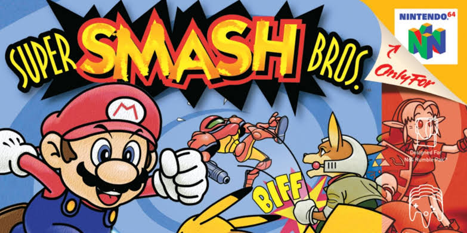
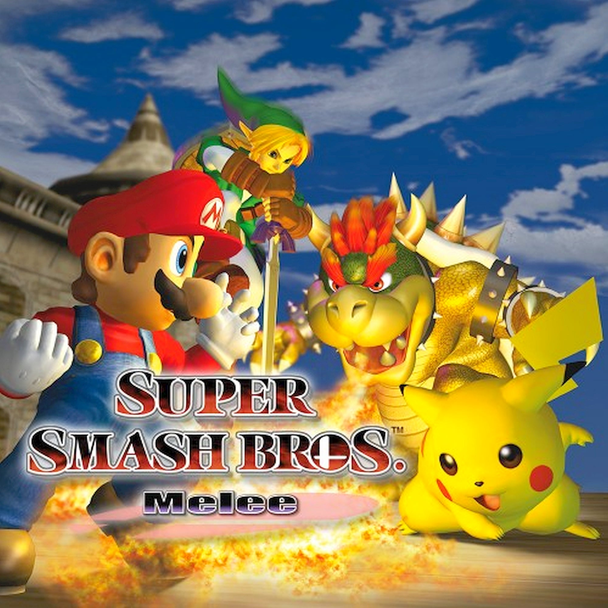
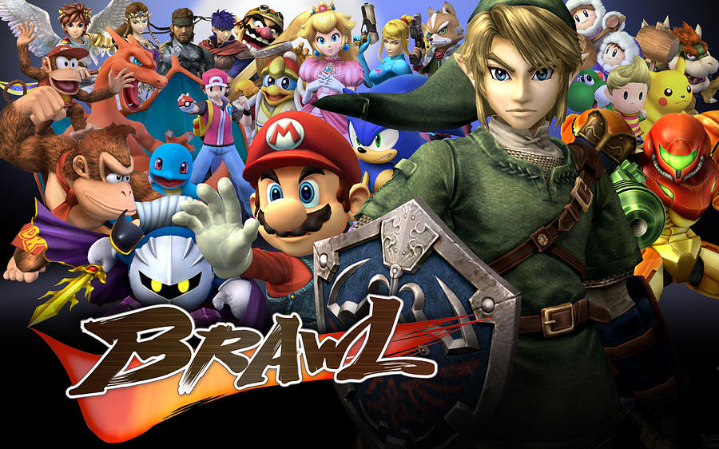
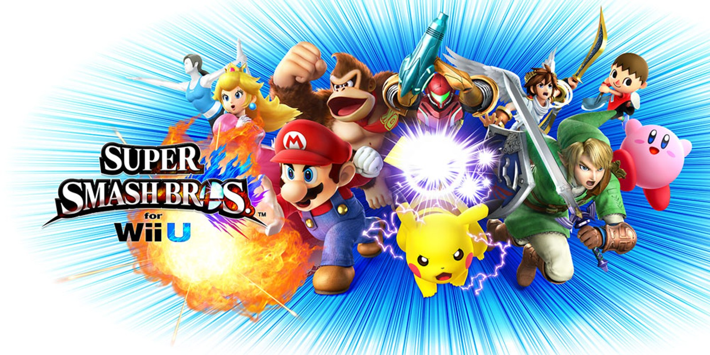

Super Smash Bros nació como un proyecto personal de Masahiro Sakurai y Satoru Iwata. Lo que empezó como un simple prototipo de pelea entre amigos se convirtió en una de las sagas más queridas de Nintendo.



